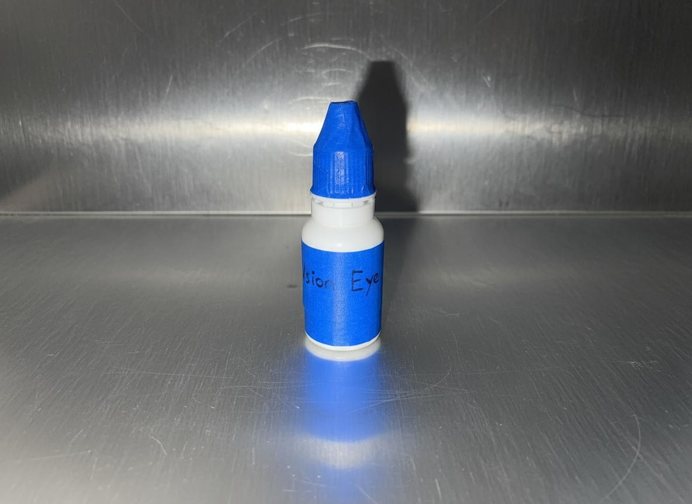
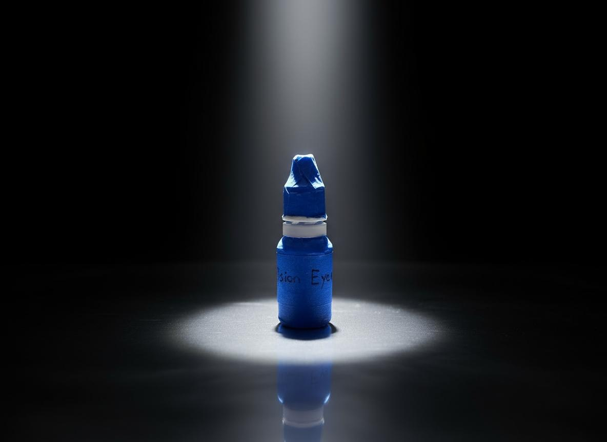
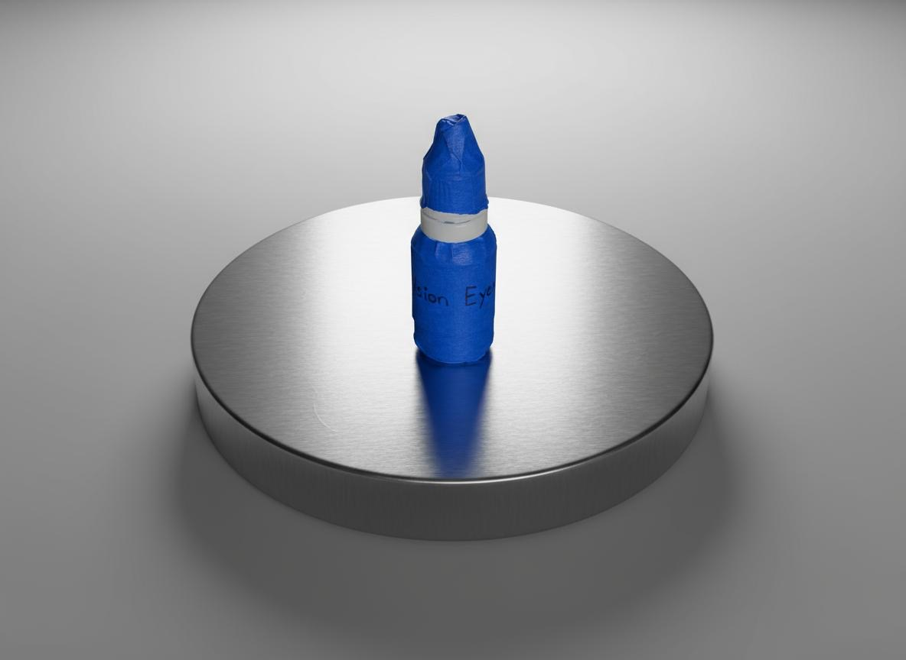

The Mediated Self
If I can only perceive myself through mirrors and media, then my “best version” is always a mediated construct. How can the self be understood if it is always projected, filtered, delayed, or distorted?
„To become the best version of yourself“ is a contemporary mantra of self-optimization, visibility and curated identity. There are several predetermined assumptions behind this phrase: // That there is such a thing as the „best“ version, a stable ideal self. // One can achieve this through control, improvement and enhancement. // This self is always reflected, on screens, in mirrors, in others’ validation This prosthesis explores how self-perception is inherently mediated through technologies of reflection such as mirrors, cameras, screens and others. In a culture obsessed with “becoming the best version of yourself,” the mirror becomes a site of both aspiration and distortion. The interactive reflection reveals a fragmented, delayed, or multiplied image of the self, exposing how our pursuit of perfection depends on external mediation. The prosthesis invites viewers to confront not their “best” self, but the distance between who they are and how they appear.


A lightweight head-mounted foil arm holds a circular mirror at variable distance, creating an off-axis, delayed reflection that shifts with posture and movement. The device foregrounds mediation—how seeing oneself is always filtered through tools, frames and angles.
POV Visions Eyedrops
What if becoming something else isn’t about control, but about letting go? What if we could experience other species and non-living beings through vision, instead of just imagine it?
POV Vision Eyedrops are speculative prostheses that allow a human to perceive the world through the eyes of another species, a fish, a sheep, a raindrop, a piece of dust. Each drop alters your perceptual system, shifting your visual, emotional, and spatial understanding for a brief period of time. You cannot choose whose eyes you’ll borrow; the selection emerges from your geographical, cultural, and ecological proximity. A person living near the sea might see through a jellyfish, while someone in a dense urban fabric might see as a pigeon or a rat. The transformation is unpredictable but contextually grounded.


